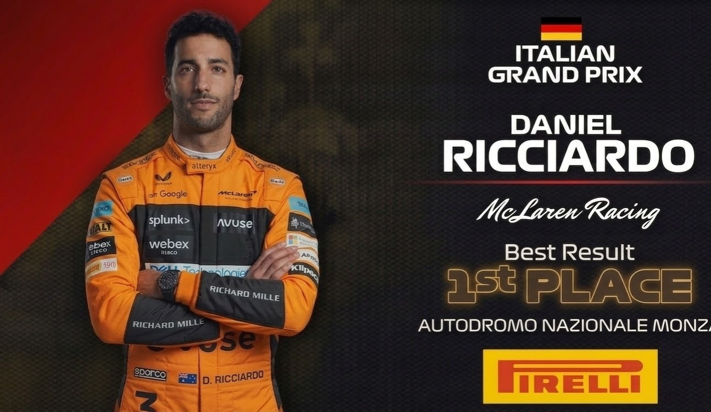
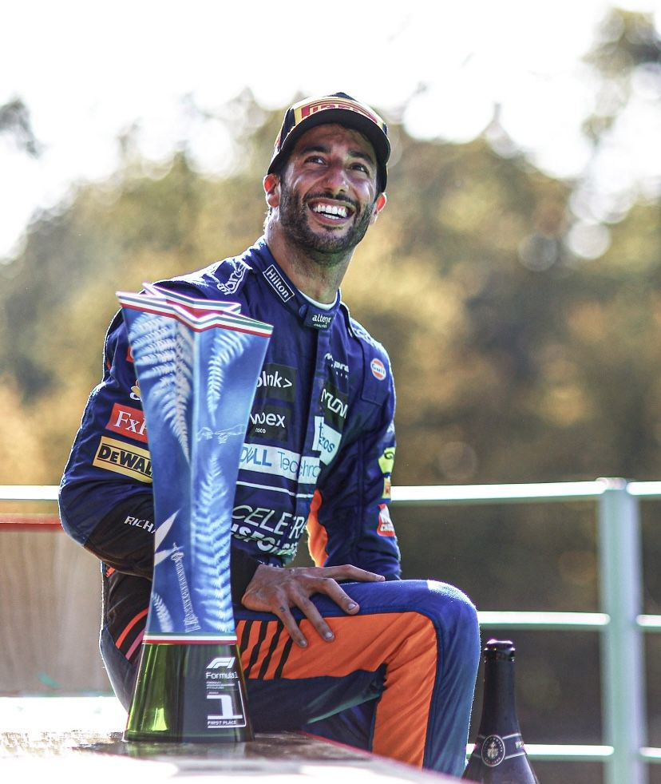

Daniel Ricciardo
DRIVER PRESENTATION

Daniel Ricciardo
Legado Competitivo y Trayectoria Resiliente de Daniel Ricciardo en la Fórmula 1
Daniel Ricciardo inició su formación en el karting australiano (1987), estableciendo una base técnica sólida bajo un programa estructurado de desarrollo de talentos. Su ascenso a F3 y F2 evidenció aptitudes excepcionales en manejo defensivo y resistencia psicológica bajo presión. El debut en Fórmula 1 con HRT (2011) marcó el inicio de una trayectoria ascendente que consolidó su estatus técnico tras su transformación en Toro Rosso y Red Bull Racing, donde acumuló 7 victorias (2014-2018) durante su asociación con el equipo austriaco. Su paso por Renault y McLaren (2019-2021) demostró su capacidad de adaptación técnica a diferentes filosofías de monoplaza y estructuras competitivas. Durante el período 2021, Ricciardo continuó su trayectoria como piloto experimentado, aportando estabilidad técnica y mentalidad ganadora a McLaren. Con más de 30 victorias, 200 podios y una carrera extendida de excelencia, Ricciardo personifica la resiliencia competitiva y la adaptabilidad técnica de un piloto de élite internacional.
MOMENTOS DESTACADOS

Victoria en Monza 2021
Su momento cumbre con McLaren, liderando un 1-2 histórico para el equipo y demostrando su mítica sonrisa en lo más alto del podio.

Redención en Mónaco
2018: Una victoria impecable en las calles del Principado, superando problemas técnicos en su motor para reinar en Mónaco.
Primera Victoria en Canadá
2014: Ricciardo rompe el dominio de Mercedes logrando su primer triunfo en F1 con una remontada brillante.